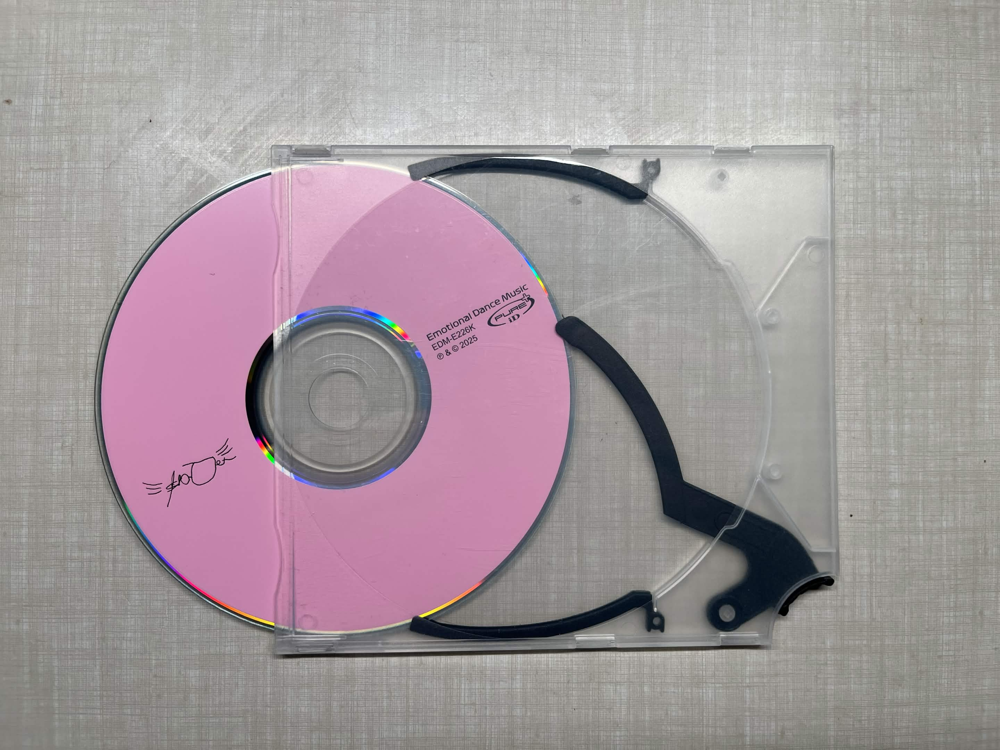
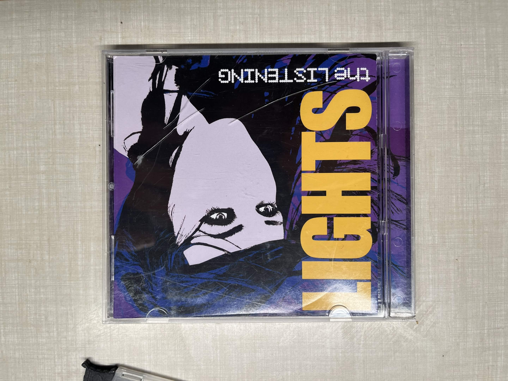
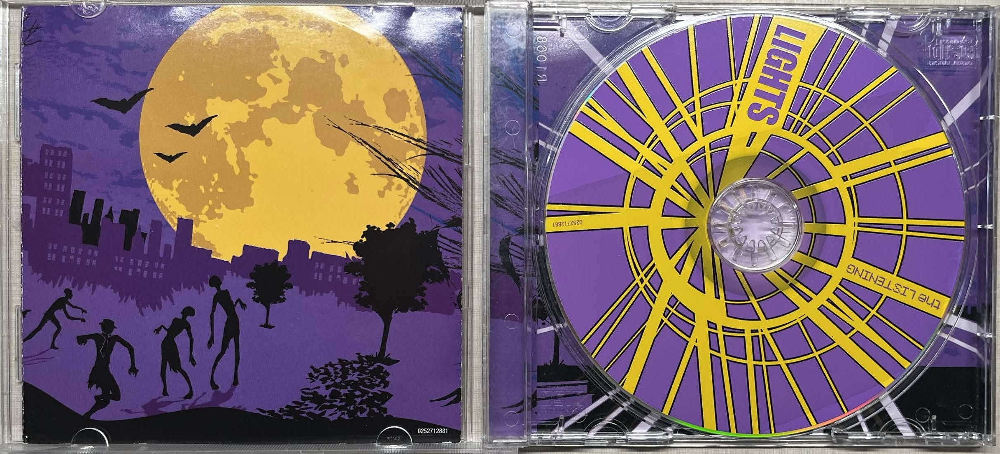
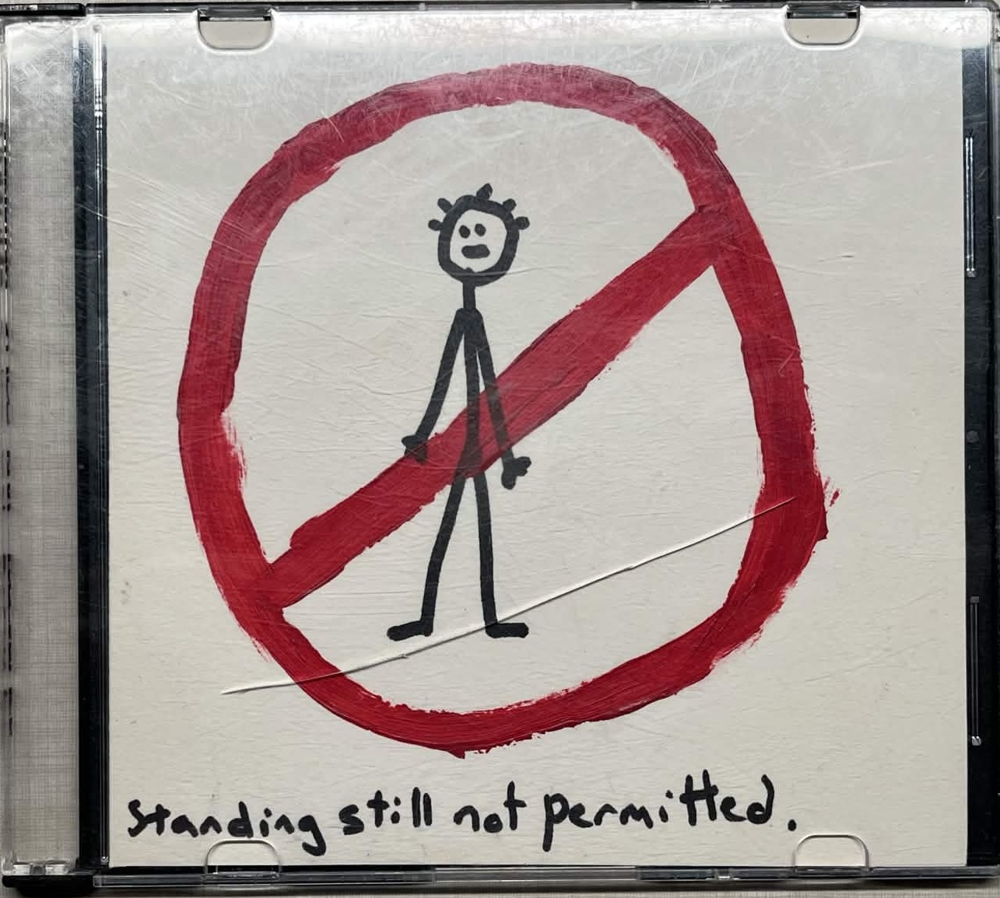
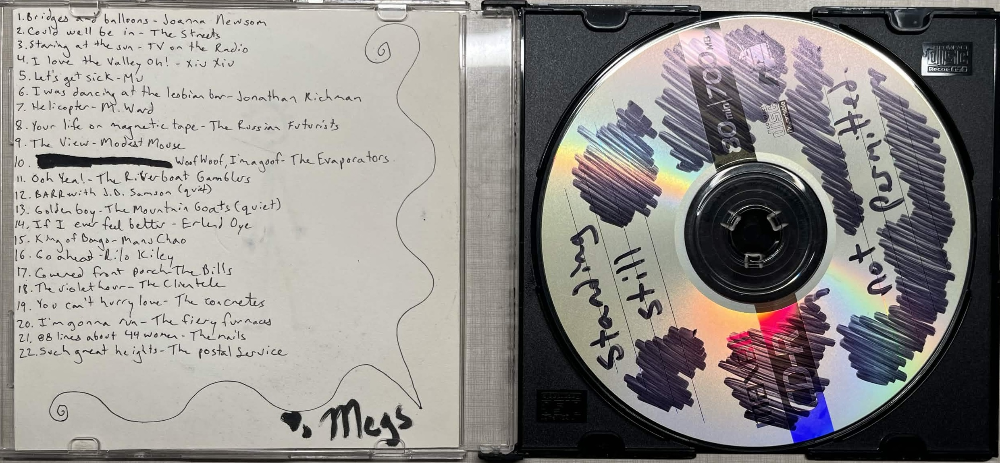

-
- cardboard (no image)
- i have one... smwhere
-
- digipak
- cardboard, extra art, and they age awesome destroyed ones are the best to find. yes they are hard to store but makes me love em more.


-
- ejector cases
- tactile BUT less art more disc

-
- jewel case
- perfect except when you step on them still perfect imo, fav colours clear its classic but also kinda new tbh i don't love the 80s black back ones (less art), orange (like the alice in chains compilation), black (like jay z black album)


-
- just the disc
- no case at all, just the disc itself
-
- slim case
- deep hatred for these i hope it makes sense, but at the same time they are the most accessible, they just have a quality. good for throwing.

